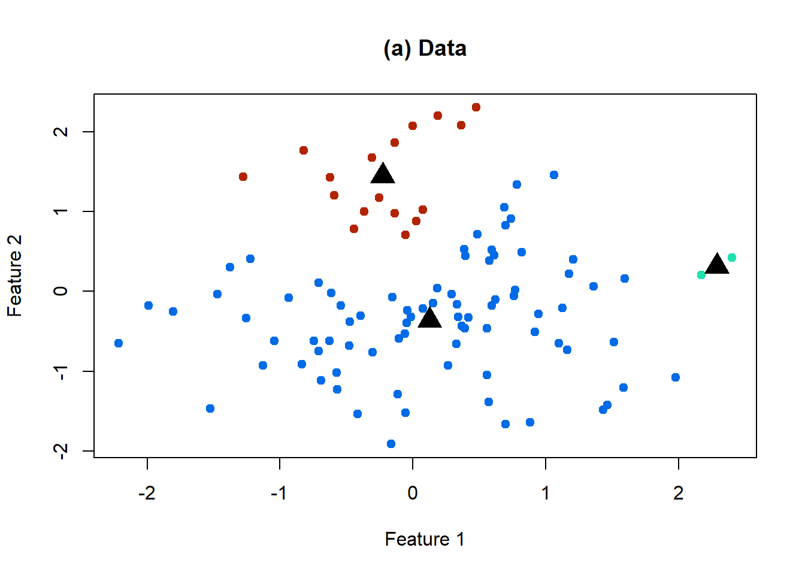
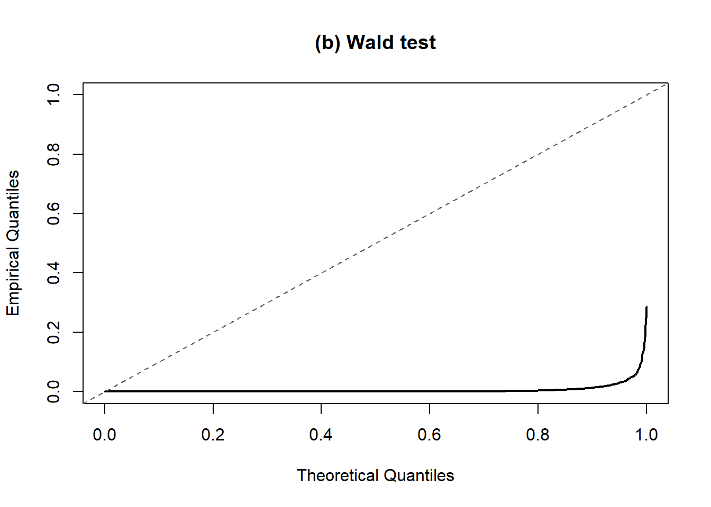
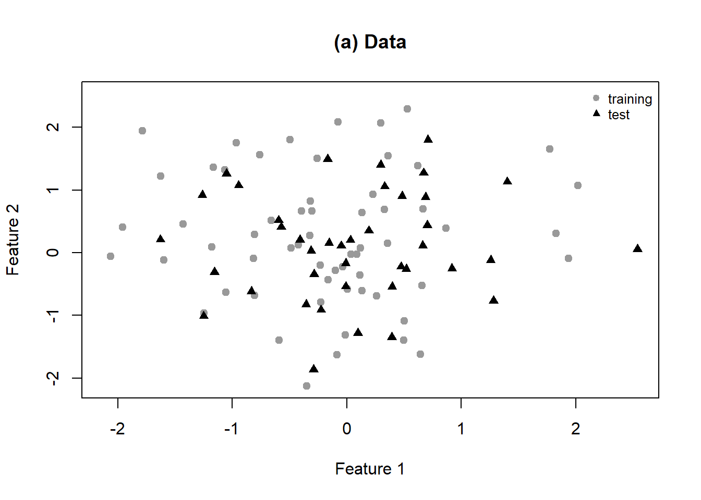
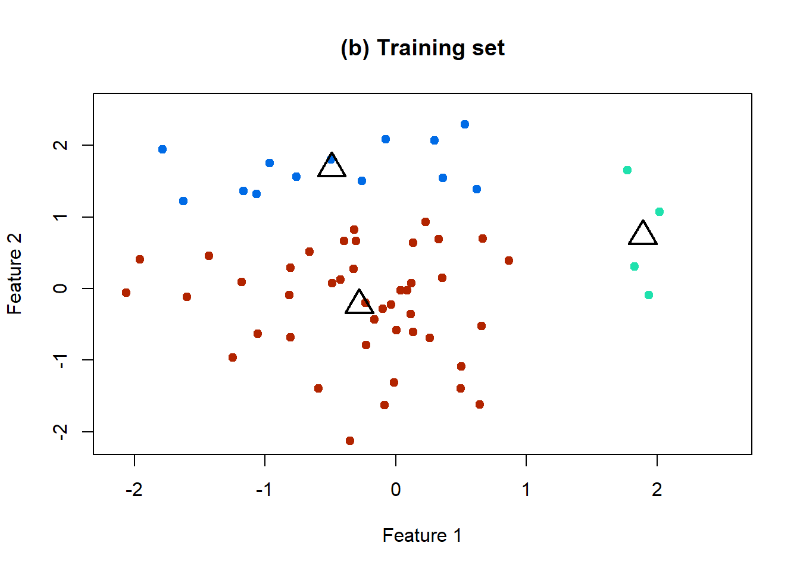
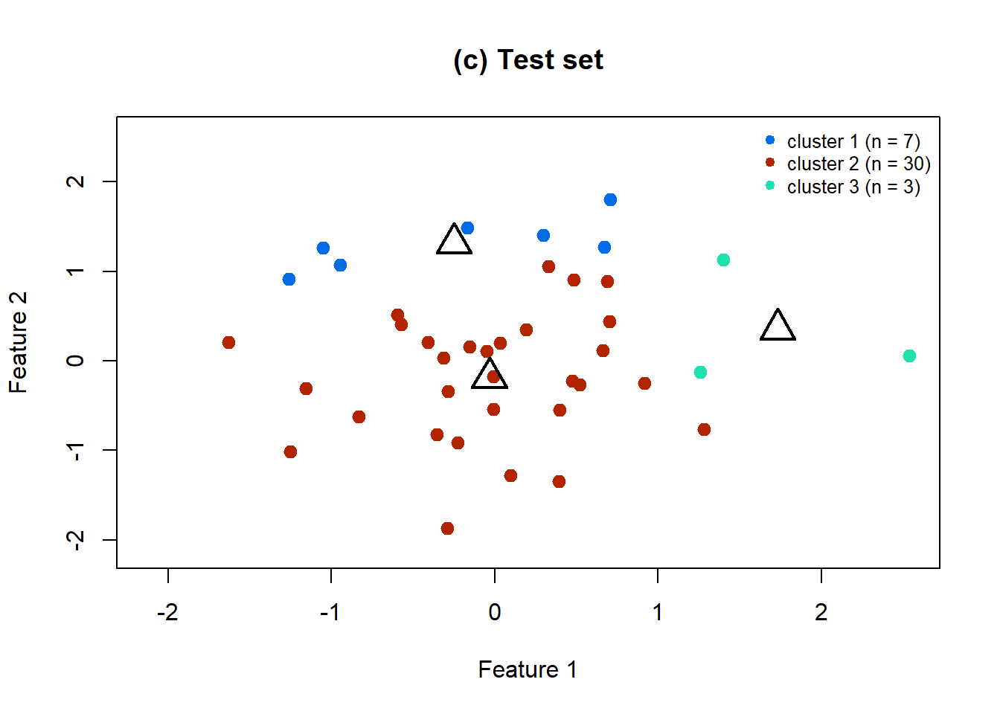
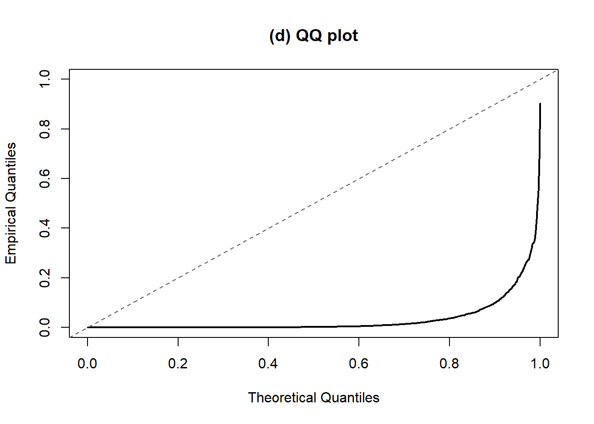

library(class)
set.seed(1)
# Parameters
n <- 100
q <- 2
sigma2 <- 1
sigma <- sqrt(sigma2)
mu <- matrix(0, nrow = n, ncol = q)
K <- 3
link <- "average"
B <- 2000
n_train <- 60
k_nn <- 3 # "three-nearest neighbors classifier"
cols <- c("#006be6", "#b22400", "#1fe1ad")
# Génération de X
gen_data <- function() {
matrix(rnorm(n * q, mean = mu , sd = sigma), nrow = n, ncol = q)
}
# Test de Wald
wald_p <- function(x, g1, g2) {
d <- sqrt(sum((colMeans(x[g1, , drop = FALSE]) -
colMeans(x[g2, , drop = FALSE]))^2))
scale <- sigma * sqrt(1 / length(g1) + 1 / length(g2))
pchisq((d / scale)^2, df = q, lower.tail = FALSE)
}
# QQ-plot (density vs uniform density)
qq_unif <- function(p, main) {
plot(ppoints(length(p)), sort(p), type = "l", lwd = 2,
xlim = c(0, 1), ylim = c(0, 1),
xlab = "Theoretical Quantiles", ylab = "Empirical Quantiles",
main = main)
abline(0, 1, lty = 2, col = "grey40") # droite y = x : p-values uniformes
}Intro
Naive test before clustering
Fonctions and parameters
Figure 1
a) A simulated dataset from 1
# Dataset
x1 <- gen_data()
head(x1) [,1] [,2]
[1,] -0.6264538 -0.62036668
[2,] 0.1836433 0.04211587
[3,] -0.8356286 -0.91092165
[4,] 1.5952808 0.15802877
[5,] 0.3295078 -0.65458464
[6,] -0.8204684 1.76728727clust <- cutree(hclust(dist(x1), method = link), k = K)
means1 <- t(sapply(1:K, function(k) colMeans(x1[clust == k, , drop = FALSE])))
plot(x1, col = cols[clust], pch = 19, xlab = "Feature 1", ylab = "Feature 2",
main = "(a) Data")
points(means1, pch = 17, cex = 2.2, col = "black")
b) QQ-plot distribution vs Wald
fig1_run <- function() {
x <- gen_data()
lab <- cutree(hclust(dist(x), method = link), k = K)
pr <- sample(K, 2)
wald_p(x, which(lab == pr[1]), which(lab == pr[2]))
}
p_fig1 <- replicate(B, fig1_run())
qq_unif(p_fig1, "(b) Wald test")
Figure 2 : sample splitting + Wald
a) Data
fig2_draw <- function() {
repeat {
x <- gen_data()
idx <- sample(n, n_train)
xtr <- x[idx, , drop = FALSE]
xte <- x[-idx, , drop = FALSE]
ltr <- cutree(hclust(dist(xtr), method = link), k = K)
lte <- as.integer(knn(train = xtr, test = xte,
cl = factor(ltr, levels = 1:K), k = k_nn))
if (all(tabulate(lte, nbins = K) >= 1)) break
}
list(xtr = xtr, xte = xte, ltr = ltr, lte = lte)
}
# a-c
ex <- fig2_draw()
# d
fig2_run <- function() {
d <- fig2_draw()
pr <- sample(K, 2)
wald_p(d$xte, which(d$lte == pr[1]), which(d$lte == pr[2]))
}
p_fig2 <- replicate(B, fig2_run())
lim <- range(rbind(ex$xtr, ex$xte))
cl_means <- function(x, lab) {
t(sapply(1:K, function(k) colMeans(x[lab == k, , drop = FALSE])))
}
means_tr <- cl_means(ex$xtr, ex$ltr) # clusters du train (estimés sur le train)
means_te <- cl_means(ex$xte, ex$lte) # clusters du test (assignés par kNN)
# a Data : train+test
plot(ex$xtr, pch = 19, col = "grey60", xlim = lim, ylim = lim,
xlab = "Feature 1", ylab = "Feature 2", main = "(a) Data")
points(ex$xte, pch = 17, col = "black")
legend("topright", c("training", "test"), pch = c(19, 17),
col = c("grey60", "black"), bty = "n", cex = 0.8)
# b : clustering Train
plot(ex$xtr, pch = 19, col = cols[ex$ltr], xlim = lim, ylim = lim,
xlab = "Feature 1", ylab = "Feature 2", main = "(b) Training set")
points(means_tr, pch = 2, cex = 2.4, lwd = 2, col = "black")
#c : tests
plot(ex$xte, pch = 19, col = cols[ex$lte], cex = 1.2, xlim = lim, ylim = lim,
xlab = "Feature 1", ylab = "Feature 2", main = "(c) Test set")
points(means_te, pch = 2, cex = 2.4, lwd = 2, col = "black")
legend("topright", bty = "n", cex = 0.8, pch = 19, col = cols,
legend = paste0("cluster ", 1:K, " (n = ", tabulate(ex$lte, K), ")"))
# d-
qq_unif(p_fig2, "(d) QQ plot")
Taux d’erreur de type I observés (seuil 5 %)
cat(sprintf("Fig 1 - Wald, clusters estimés sur toutes les données : %.3f\n",
mean(p_fig1 < 0.05)))Fig 1 - Wald, clusters estimés sur toutes les données : 0.973cat(sprintf("Fig 2 - Wald, sample splitting + kNN : %.3f\n",
mean(p_fig2 < 0.05)))Fig 2 - Wald, sample splitting + kNN : 0.833cat("Attendu pour un test valide : 0.050\n")Attendu pour un test valide : 0.050